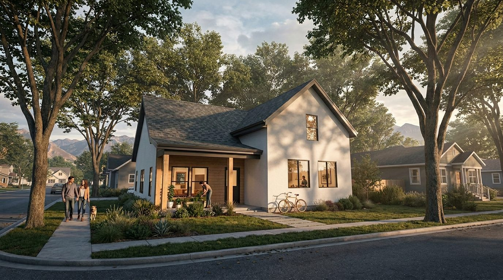

Building From the Middle Out: The Understory Collection and the Missing Middle
What if the housing crisis isn't only about building more, but about building differently? Over the past year our team has been reading Missing Middle Housing by Daniel Parolek and Escape the Housing Trap by Charles Marohn. Both point to the same gap in American neighborhoods: the duplexes, fourplexes and small courtyard homes that once made communities more affordable, more resilient and easier to live in.

The middle that went missing
For decades, most neighborhoods have been planned around two extremes: detached single-family houses or large apartment buildings. The homes in between, what Parolek calls missing middle housing, quietly disappeared. Yet those are often the homes that first-time buyers, young families, people who want to downsize and the people who work in a community can actually afford.
The more we dig in, the more convinced we are that great neighborhoods aren't built from the top down. They're built from the middle out.
Introducing The Understory Collection
The Understory Collection is our answer: a growing set of middle housing designs for projects of two to eight homes. In a forest, the understory is the quiet, resilient layer beneath the canopy. That's the role we want these homes to play: denser than a house, more human than a tower, and at home on an ordinary residential street.
The collection includes 15 typologies so far, from studio and one-bedroom cottages to two- and three-bedroom homes, duplexes, homes with ADUs and a five-bedroom cottage. They can be combined into duplexes, fourplexes, courtyards, rows and stacked flats. Knighton Architecture designs every typology in the collection, and our development partner, Saltus Ventures, is bringing them to market by finding sites, securing approvals and delivering the homes.
Small footprints, real affordability
Affordability starts with size and simplicity. The Burrow, a 420-square-foot studio cottage, is the most affordable home in the collection. The Hollow is a 773-square-foot one-bedroom cottage, and The Fern fits three bedrooms into 1,231 square feet. Compact, efficient plans use less land and less material per home, without giving up natural light, storage or a real kitchen.
We're also pricing each design line by line with local suppliers and comparing framing systems, so every plan is designed around what it will actually cost to build.
Neighbors, not monuments
Middle housing only works if it fits. The Understory homes use front porches, pitched roofs, familiar materials and entries that face the street, so a cottage court or a duplex reads as part of the neighborhood instead of an intrusion. The goal is to add homes without displacing what makes a neighborhood worth living in. These typologies are not monuments. They are neighbors.
Part of a longer commitment
Housing has long been part of our work, from the micro-units at Pax Station Apartments beside the Ballpark TRAX Station to the townhome prototypes we designed with Woodside Homes. The Understory Collection takes what we've learned and makes it repeatable, so more communities can add the kinds of homes they're missing.
You can explore every plan at theunderstorycollection.com. If you own a lot, build homes, or work with a city that's exploring middle housing, we'd love to talk.